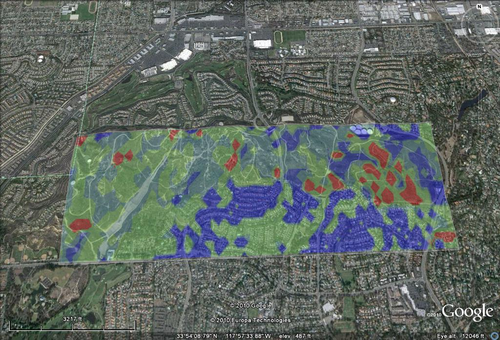

Case Study: West Coyote Hills, Orange County CA
At a glance
Primary Partner:
Chevron Corporation
Completed: August 2010
Models:
Carbon sequestration and storage, flood regulation
Maps: Source, sink, use, and flow maps for the above ecosystem services, modeled at both the project site and the watershed scales.
Highlights: Proof-of-concept for use of ARIES within an urban ecosystem at the project scale. Addresses gaps in the ecosystem services modeling literature that include accounting for multi-scalar flows, explicit uncertainty, data limitations, and spatial representation of beneficiaries. Uses real world data to illustrate the use of a quantitative ecosystem services framework for applications in land management, planning, and environmental value creation.
Practical application
A complete ARIES assessment of
West Coyote Hills can help stakeholders to elucidate how
much surrounding residents and businesses benefit from the
natural functions of the property, in relation to other
environmental assets in the watershed. Furthermore,
beneficiaries of the carbon sequestration and flood
regulation services can be located with precision and the
quantity of carbon sequestered and amount of flood
protection provided can be calculated and depicted
spatially. Moreover, the ARIES maps can help to inform
development siting, ecosystem service management, and
different planning scenarios can be tested to provide
analysis of alternative management approaches.
Developers may also choose to use ARIES as a communication
tool to present community-based decisions that are firmly
founded in science.
The
forces of rapid urban expansion are causing a rise in demand for
urban ecosystem services. This swell in demand is also driving
an increase in their perceived value. Therefore,
landowners, developers, planners, and cities are keenly
interested in how to best manage such environmental assets.
The West Coyote Hills property is prototypical of this
phenomenon, and establishes a proof-of-concept for the ARIES
approach using real world data at the project site scale (ca. 550 acres).
StepsThe West Coyote Hills case study was completed in two phases. In the first phase a scope of work was determined through discussion with the landowner and research team. Then, ecosystem services and their beneficiaries were identified, from which two services were selected for modeling with ARIES. Next, biophysical, ecological, and socioeconomic spatial datasets were collected and prepared for use with the ARIES system. In phase 2 models were built for carbon sequestration and storage and flood regulation, accounting for regional characteristics of southern Californian. Further calibration of the models was performed based on preliminary sensitivity analyses and data was integrated into the system for model runs. Then, source, sink, use, and flow simulations were performed resulting in spatial outputs. A total of 24 maps were produced, each providing unique insights into how the ecosystem services were generated at West Coyote Hills and delivered to the end users throughout the watershed and beyond. We have not yet completed a third phase, consisting of post hoc sensitivity analysis and optimization techniques, which would yield actionable model outputs to fully support local decision making. |